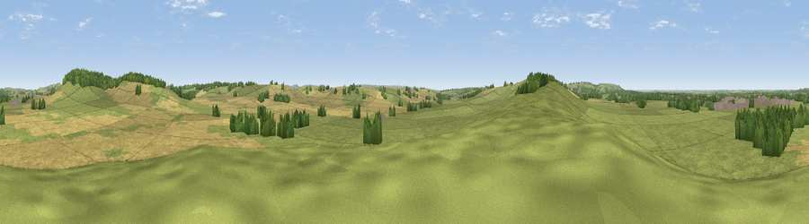

Viewpoint near Ashendon
#29223 in England · top 42% of its area beats it · near AshendonThe view, rendered

A 360° render of this exact spot computed from the terrain model, tree cover and land cover — summer colours, afternoon light, calibrated against photographs of famous viewpoints. Real trees, hedges and buildings will differ in detail.
The panorama
Grey silhouette: terrain skyline in each direction (720 bearings, Earth curvature and refraction included). Dashed green: skyline with trees (+15 m) and buildings (+8 m) as obstacles. Blue strip: how far the ground is visible on each bearing.
Where the view opens
Wedge length = distance to the farthest visible ground on that bearing (vegetation-aware). Rings at 10, 25 and 50 km.
What fills the view
58% grassland · 34% cropland · 7% woodland ·
Angular shares of the visible panorama (visual magnitude), not map area. Landscape diversity 0.39 (0–1 Shannon).
Key numbers
More beautiful places nearby
The staircase of upgrades: each row has a higher view potential than everything closer. Driving times are estimates from straight-line distance, calibrated against real road routing — check an actual route before setting out.
| Place | Direction | Drive | Score |
|---|---|---|---|
| Viewpoint near Waddesdon | NE · 2 km | ~5 min | 51.8 |
| Viewpoint near Ashendon | WSW · 2 km | ~5 min | 65.0 |
| Muswell Hill | W · 8 km | ~16 min | 67.9 |
| Beacon Hill | SE · 15 km | ~26 min | 72.7 |
| Viewpoint near Chinnor | SSE · 15 km | ~27 min | 74.5 |
| Coombe Hill Monument | SE · 15 km | ~27 min | 75.5 |
| Viewpoint near Woolstone | WSW · 51 km | ~72 min | 76.7 |
| Viewpoint near Meon Vale | WNW · 62 km | ~85 min | 77.0 |
51.83011, -0.95694 · source: screening · position refined by local search. Computed location — check access rights before visiting.